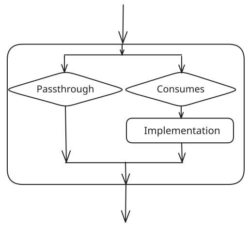

Using Tasks¶
Tasks are the fundamental unit of behavior in a DV-Flow specification. Tasks accept data from tasks that they depend on, and produce data to be used by dependent tasks. Tasks may have local parameters to control operation.
The implementation of a task is required to perform three key tasks:
Compute dependencies – Specifically, determine whether the task must perform work. Tasks typically save a ‘memento’ with the system that is used by future evaluations of the task.
Perform work – The task implementation must perform the desired data transformation when required. Usually this involves invoking another tool, such as a compiler. When work is performed, the task may produce markers to communicate the location of errors, warnings, or other key information.
Produce output – Tasks are required to pass data output data to their successor tasks independent of whether the task performed a data transformation.
Most tasks are built on top of another existing task or tasks.These ‘derived’ tasks either modifiy the parameters of the base task to cause it to behave as desired, or compose multiple tasks together to achieve the desired functionality.
Specifying the Base Task¶
Each defined task has a unique identity. Typically, though, the required behavior is very similar to that of an existing task. As a consequence, it is very common to define a task in terms of another. This is done via the uses clause.
tasks:
- name: PrintHello
uses: std.Message
The example above creates a new task named PrintHello that inherits the parameters and implementation of the existing std.Message task.
Note
``uses:`` vs ``type:`` – you may see older flows select the base task
with type: instead of uses: (e.g. type: std.FileSet). Both
select the base task, but type is also the name of a common parameter
(for example a FileSet’s type: systemVerilogSource), so the same key
can appear with two different meanings in one task. Prefer uses: for the
base task; it is unambiguous and is the canonical form used throughout this
guide.
Specializing Task Parameters¶
The simplest way to leverage existing tasks is to customize the value of parameters that control the behavior of the base task. Let’s take a look at the std.Message task. This task displays a user-specified message string. By default, the message is empty.
tasks:
- name: PrintHello
uses: std.Message
with:
msg: Hello, World!
The example above creates a new task named PrintHello that overrides the value of the msg parameter. This causes the implementation of std.Message to print ‘Hello, World!’.
Specifying Dependencies¶
Most tasks operate on data produced by other tasks. The needs clause specifies the tasks that must complete before this task can execute.
tasks:
- name: rtlfiles
uses: std.FileSet
with:
type: "verilogSource"
base: "rtl"
include: "*.v"
- name: sim
uses: hdlsim.vlt.SimImage
needs: [rtlfiles]
with:
top: [mytop]
- name: run
uses: hdlsim.vlt.SimRun
needs: [sim]
The example above shows three tasks that:
Gather verilog source files from the rtl directory
Compile the files into a simulation image
Run the simulation image
Data passes between each pair of steps above:
rtlfiles outputs a list of sources files required to create a simulation image
The sim-image task passes a path to the simulation image to the task that runs it
In addition, one step cannot proceed until the proceeding step has completed. These scheduling and dataflow requirements are captured using needs relationships.
Structuring Dependencies¶
Each task should declare only its direct dependencies in needs.
DFM resolves transitive dependencies automatically – if task C needs B and
B needs A, then C receives the outputs of both A and B without listing A
explicitly.
Co-location principle: Define tasks in the same flow.yaml file as the
source files they describe. Use package fragments to link directories together.
This keeps each directory’s build logic close to its source and makes the
dependency graph easy to reason about.
# BAD: flat needs list -- no structure, hides the real dependency chain
- root: build
uses: sim.SimImage
needs: [rtl, pkg_a_hdl, pkg_a_hvl, pkg_b_hdl, pkg_b_hvl,
env, sequences, tests, hdl_top, hvl_top]
# GOOD: each task declares only direct deps
# (defined in separate fragment files co-located with source)
# verification_ip/pkg_a/flow.yaml
- name: pkg_a_hdl
uses: std.FileSet
with:
type: systemVerilogSource
include: "*.sv"
- name: pkg_a_hvl
needs: [pkg_a_hdl]
uses: std.FileSet
with:
type: systemVerilogSource
include: "*.sv"
# tb/flow.yaml
- name: hdl_top
uses: std.FileSet
needs: [pkg_a_hdl, pkg_b_hdl]
with:
type: systemVerilogSource
include: "hdl_top.sv"
- root: build
uses: sim.SimImage
needs: [hdl_top, hvl_top, rtl]
with:
top: [hdl_top, hvl_top]
Use dfm graph <task> -o flow.dot to visualize and verify the dependency
graph.
Tasks and Dataflow¶
Task needs relationships specify dataflow between tasks in addition to scheduling dependencies. A task provides two controls over what input data is provided to the task implementation (if present) and what inputs are forwarded to the output.

The two controls are:
consumes - Specifies what input data will be passed to the implementation
all - All input data is passed to the implementation
none - No input data is passed to the implementation
pattern - Inputs matching a pattern are passed to the implementation
passthrough - Specifies what inputs are passed to the task output
all - All input data is passed to the output
none - No input data is passed to the output
unused - Inputs that are not consumed are passed to the output
pattern - Inputs matching a pattern are passed to the output
The default value of passthrough is always unused. The default value for the consumes` parameter depends on the task type:
Shell or Python Implementation: all
DataItem or No Implementation: none
Using DataItem Tasks¶
Tasks generally produce output data. That output data may be produced by the task’s programming-language implementation (ie Python) when computation of some form is required. When no computation is required, there is concise way to produce a data item: define a task that uses a data type as the base. This is most commonly done when producing a data item that captures a set of tool options.
tasks:
- name: SimOptionsTrace
uses: hdlsim.SimElabArgs
with:
args: [--trace-fst]
- name: sim_img
uses: hdlsim.vlt.SimImage
needs: [SimOptionsTrace]
The SimOptionsTrace task above will produce a single hdlsim.SimElabArgs data item that instructs the Verilator simulator to enable dumping a FST-format waveform file.
This has the same effect as adding –trace-fst directly on the sim_img task, but provides more flexibility:
Tasks can be defined with commonly-used sets of options
Conditional task execution can be used to select between option sets
Using Compound Tasks¶
Compound tasks allow a task to be defined in terms of a set of subtasks. In many cases, this allows more-advanced behavior to be created without the need to provide a programming-language implementation for the task.
tasks:
- name: CreateSVFiles
rundir: inherit
body:
- name: mod1
uses: std.CreateFile
with:
filename: mod1.sv
content: |
module mod1;
endmodule
- name: mod2
uses: std.CreateFile
with:
filename: mod2.sv
content: |
module mod2;
endmodule
- name: getFiles
uses: std.FileSet
passthrough: none
needs: [mod1, mod2]
with:
type: "verilogSource"
base: "."
include: "*.sv"
The compound task above uses the std.CreateFile task to create two SystmeVerilog files. We then want to pass both files on to all tasks that depend on CreateSVFiles.
This is accomplished by:
- Specifying that all tasks use the same run directory via the
rundir: inherit clause.
Causing the getFiles to depend on the file-creation tasks
Compound Task Error Handling¶
By default a compound task stops launching new subtasks as soon as one fails. Two fields change this behaviour.
max_failures controls how many subtask failures are tolerated before remaining independent siblings are skipped:
tasks:
- name: RunTests
max_failures: -1 # -1 = run all tests regardless of failures
body:
- name: test1
uses: mytools.RunTest
- name: test2
uses: mytools.RunTest
- name: test3
uses: mytools.RunTest
Value |
Behaviour |
|---|---|
|
No limit; all independent subtasks run even after failures. |
|
Stop after N failures have accumulated. |
on_error specifies a Python callable (module.function) that is
invoked when the compound finishes to produce the compound’s final status and
output. It receives a CompoundRunInput
containing all subtask output items and per-subtask summaries:
tasks:
- name: RunTests
max_failures: -1
on_error: myproject.utils.collect_results
body:
- name: test1
uses: mytools.RunTest
- name: test2
uses: mytools.RunTest
See Error Handling for a full description including a worked example
and the on_error callable API.
Conditional Tasks¶
By default, all tasks on the needs dependency path from the root task(s) will be executed. In some cases, though, it is desirable to only execute tasks under specific circumstances. The iff property of tasks supports this use model.
package:
name: my_ip
with:
debug_level:
type: int
value: 0
tasks:
- name: SimOptions
uses: hdlsim.SimElabArgs
body:
- name: SimOptionsDebug
uses: hdlsim.SimElabArgs
iff: ${{ debug_level > 0 }}
with:
args: [--trace-fst]
- name: sim_img
uses: hdlsim.vlt.SimImage
needs: [SimOptions]
The example above uses conditional execution to customize elaboration options. When the debug_level parameter’s value is greater than 0, the SimOptionsDebug task sends the –trace-fst option to the simulator. Otherwise, no additional arguments are provided.
iff gates a single task on a condition. When you need richer branching or
iteration – choosing between bodies, matching cases, or looping until a
condition is met – use a control: block; see
Conditional & Iterative Tasks.
Task Override¶
Tasks can override other tasks using the override field. This allows you to
replace the implementation or parameters of a task defined elsewhere in the flow,
typically to customize behavior for a specific configuration or environment.
package:
name: my_project
tasks:
- name: sim
uses: hdlsim.vlt.SimImage
with:
top: [my_top]
# Override the sim task for debug builds
- name: sim_debug
override: sim
with:
top: [my_top]
debug: true
When a task is overridden, the overriding task replaces the original task
throughout the flow. Any task that depends on sim will now receive the
implementation from sim_debug instead.
Task override is particularly useful for:
Configuration-specific customization: Different build modes (debug, release, etc.)
Tool-specific variants: Swapping between different tool implementations
Testing and debugging: Temporarily replacing a task without modifying the original
Note that task override operates at the package level - an override only affects references within the package where it’s defined, not across package boundaries.
Dataflow Control: Consumes and Passthrough¶
Tasks have fine-grained control over dataflow using the consumes and
passthrough parameters. These control what input data reaches the task
implementation and what inputs are forwarded to the output.
Consumes Patterns¶
The consumes parameter can specify patterns to selectively consume inputs:
tasks:
- name: compile
uses: hdlsim.vlt.SimImage
consumes:
- type: std.FileSet
filetype: systemVerilogSource
This task will only consume FileSet inputs with filetype equal to
systemVerilogSource. Other inputs will be passed through to the output.
The consumes parameter accepts:
all: Consume all inputs (default for tasks with implementations)
none: Consume no inputs (default for DataItem tasks)
Pattern list: List of dictionaries specifying matching criteria
Passthrough Patterns¶
The passthrough parameter controls which inputs are forwarded to output:
tasks:
- name: process
uses: my_tool.Processor
passthrough:
- type: std.FileSet
filetype: verilogSource
This forwards only Verilog source filesets to the output, filtering out other input types.
The passthrough parameter accepts:
all: Pass all inputs to output
none: Pass no inputs to output
unused: Pass only inputs not consumed by the task (default)
Pattern list: List of dictionaries specifying matching criteria
Pattern Matching¶
Patterns match data items by their fields. Multiple fields create an AND condition - all must match:
consumes:
- type: std.FileSet
filetype: systemVerilogSource
attributes: [uvm]
This matches FileSet items that are SystemVerilog sources AND have the ‘uvm’ attribute.
Run Directory Modes¶
Tasks can control how run directories are created using the rundir parameter.
This affects where the task executes and how it organizes its outputs.
tasks:
- name: parent_task
rundir: unique
body:
- name: child_task
rundir: inherit
Run directory modes:
unique: Create a dedicated directory for this task (default)
Each task gets its own isolated workspace
Outputs are cleanly separated
Best for tasks that produce files
inherit: Use the parent task’s directory
Shares workspace with parent
Useful for organizing sub-tasks
Required when sub-tasks need to access each other’s files
The inherit mode is particularly useful for compound tasks that create
multiple files which need to be processed together:
tasks:
- name: CreateTestFiles
rundir: inherit # Share directory across all subtasks
body:
- name: create_file1
uses: std.CreateFile
with:
filename: test1.sv
content: "module test1; endmodule"
- name: create_file2
uses: std.CreateFile
with:
filename: test2.sv
content: "module test2; endmodule"
- name: gather
uses: std.FileSet
needs: [create_file1, create_file2]
with:
include: "*.sv"
All three subtasks share the same directory, so the gather task can
find both created files.